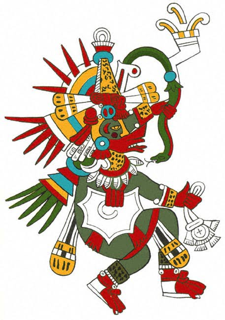
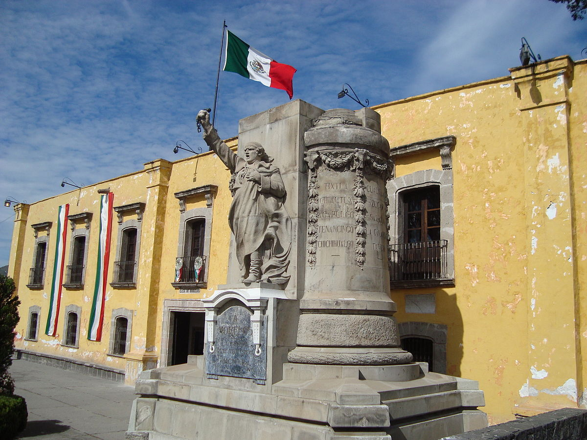

Ecatepec de Morelos is the most populated suburb of Mexico city, belonging to State of Mexico. The suburb began to exist with the grown of the city
The name "Ecatepec" is derived from Nahuatl, and means "windy hill" or "hill devoted to Ehecatl (Aztech god of the wind)". Ecatepec is over a dry lake, so is very common to find strong winds over this city
 "Morelos" is the last name of José María Morelos, a hero of the Mexican War of Independence. The house of the image, is where this figure was shot. Know this place is a museum called "Casa de Morelos"